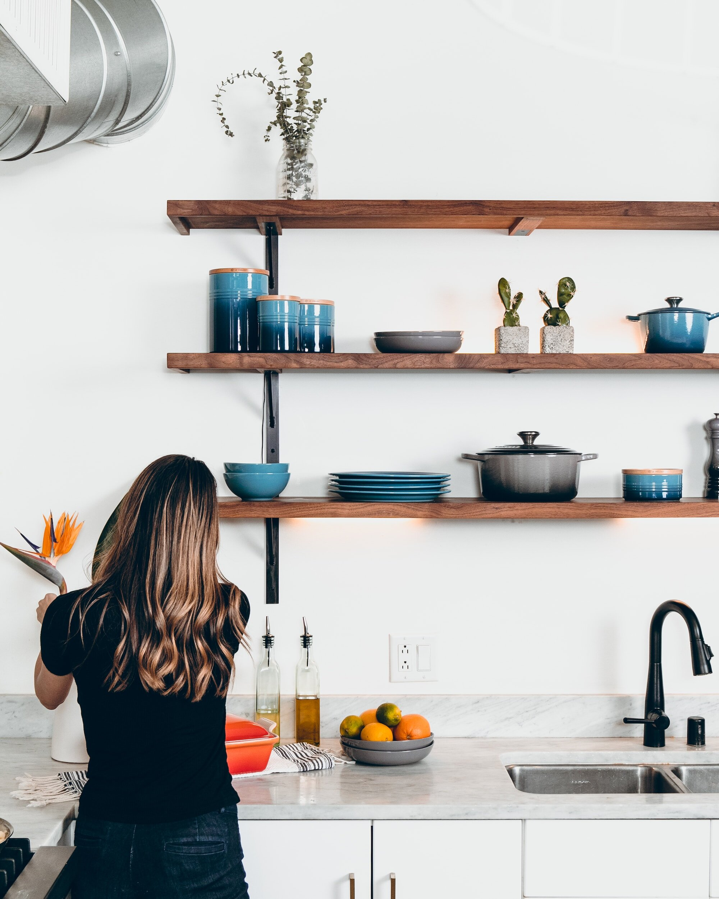

The Life-Changing Impact of Being a Professional Organizer
Being a professional organizer is not merely a career choice; it is a transformative profession that has the power to change people's lives profoundly. Professional organizers go beyond tidying up spaces; they offer guidance, support, and solutions to create organized, functional, and harmonious environments. In this article, we will explore the significant impact that professional organizers have on their clients' lives, highlighting the physical, emotional, and mental transformations that occur when embarking on a journey of organization.
Bringing Order to Chaos: For individuals overwhelmed by clutter and disorganization, the intervention of a professional organizer is nothing short of a revelation. These experts have a unique ability to bring order to chaotic spaces, turning overwhelming messes into organized havens. The newfound sense of calm and clarity that emerges from the organized environment can be life-changing. Clients experience reduced stress levels, improved focus, and enhanced productivity. By transforming their living or working spaces into orderly sanctuaries, professional organizers empower their clients to lead more balanced and fulfilling lives.

Cultivating Mindfulness and Intentionality::
The process of organization is more than just arranging belongings; it encourages mindfulness and intentionality. Professional organizers guide clients to reflect on their possessions, their purpose, and their impact on daily life. By fostering mindfulness, clients learn to be more deliberate in their choices, avoid impulsive purchases, and adopt a more sustainable approach to consumption. The shift from mindless accumulation to thoughtful curation of possessions promotes a sense of freedom and fulfillment, which extends far beyond the organized space.
Empowering Letting Go::
Possessions often carry emotional attachments and memories that make letting go difficult. Professional organizers help clients navigate the emotional challenges of decluttering and purging. They provide a supportive environment that enables clients to make informed decisions about what to keep, donate, or discard. Empowering clients to let go of possessions that no longer serve a purpose or bring joy liberates them from the weight of unnecessary belongings. This newfound ability to release the past and embrace the present paves the way for personal growth and emotional healing.
Sparking Personal Growth and Transformation: The journey of organization is transformative, not only for the spaces being organized but also for the individuals involved. As clients witness their spaces evolve from cluttered chaos to organized serenity, they often experience a newfound sense of empowerment and self-belief. The organizational process inspires them to seek order and balance in other areas of their lives, leading to personal growth and positive lifestyle changes. This transformation transcends the physical environment, impacting various aspects of their daily routines, relationships, and overall well-being.
Encouraging Lifelong Habits: The influence of professional organizers extends beyond the initial organizing project. Their clients are equipped with valuable skills and systems that can be applied throughout their lives. By learning effective organizational techniques, clients can maintain the order they achieved and prevent clutter from accumulating again. The habits instilled by professional organizers promote sustainable and organized living, leading to long-lasting benefits. These skills, once learned, become invaluable tools that help clients navigate life's challenges with a sense of control and confidence.
Being a professional organizer goes far beyond tidying spaces; it is a life-changing profession that impacts clients on a profound level. Through bringing order to chaos, cultivating mindfulness, empowering letting go, sparking personal growth, and encouraging lifelong habits, professional organizers inspire transformative change in their clients' lives. The ripple effects of an organized space extend far beyond the physical environment, leading to enhanced well-being, self-awareness, and fulfillment.